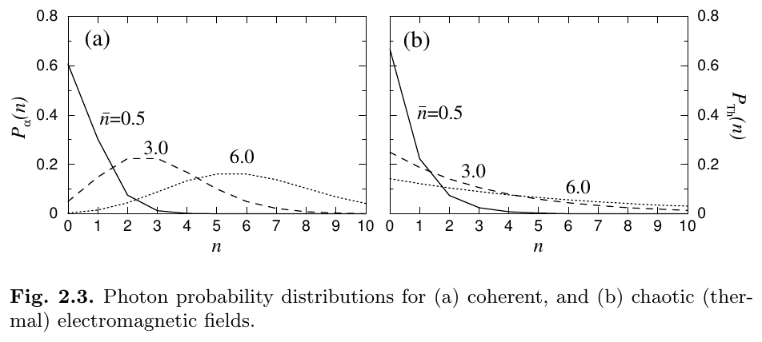
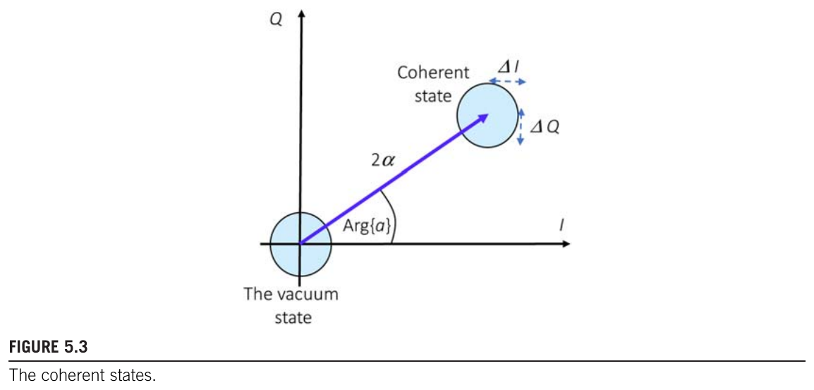
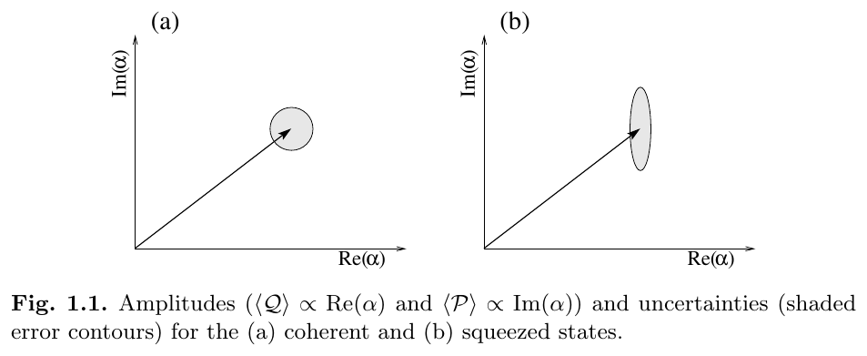
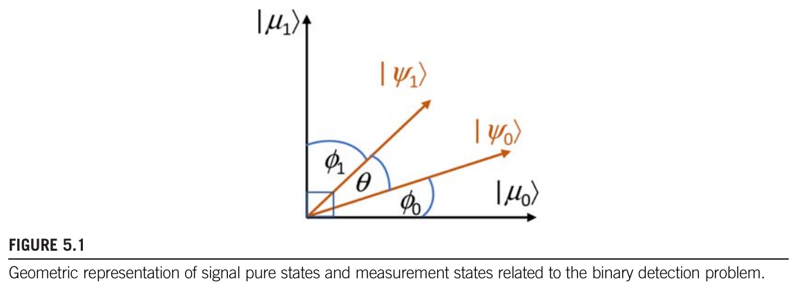
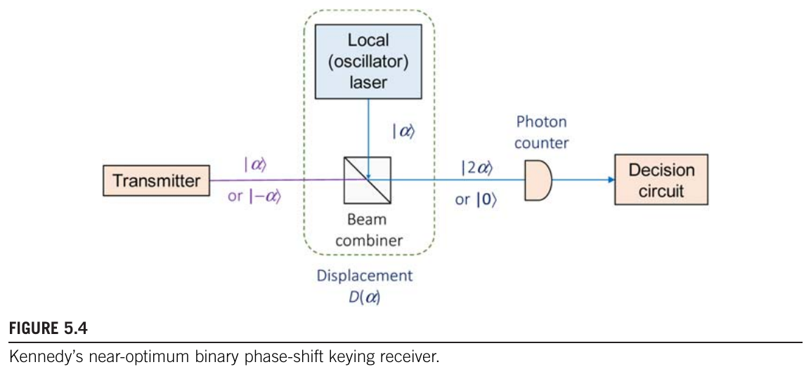
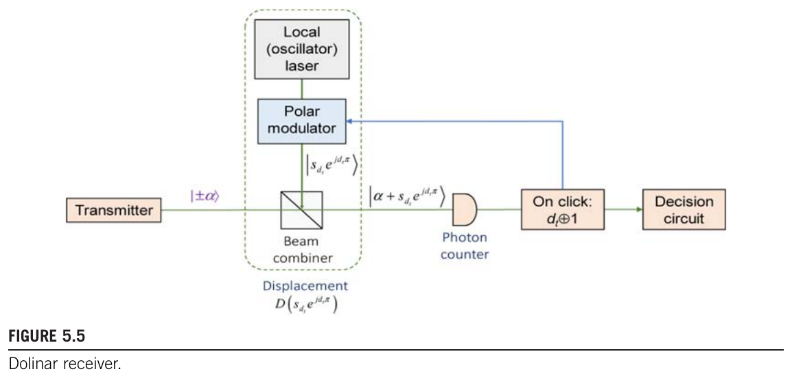
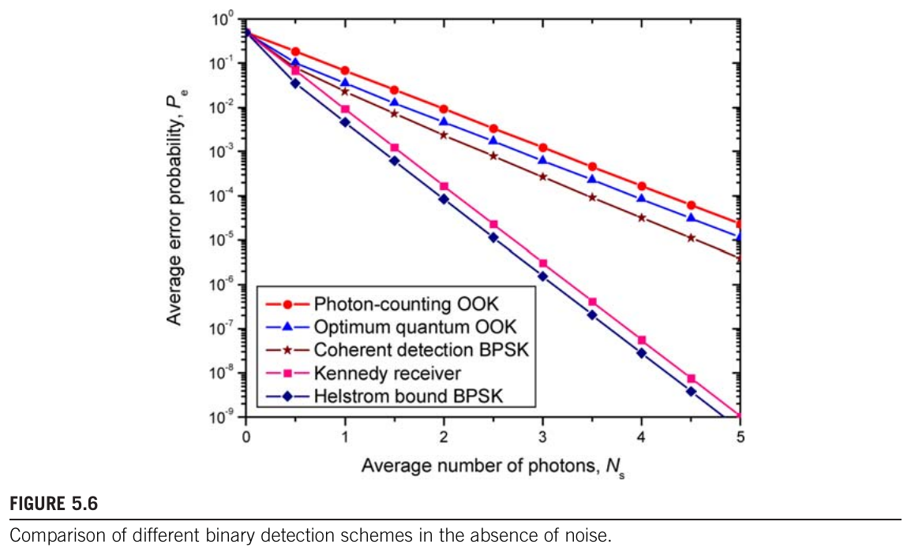
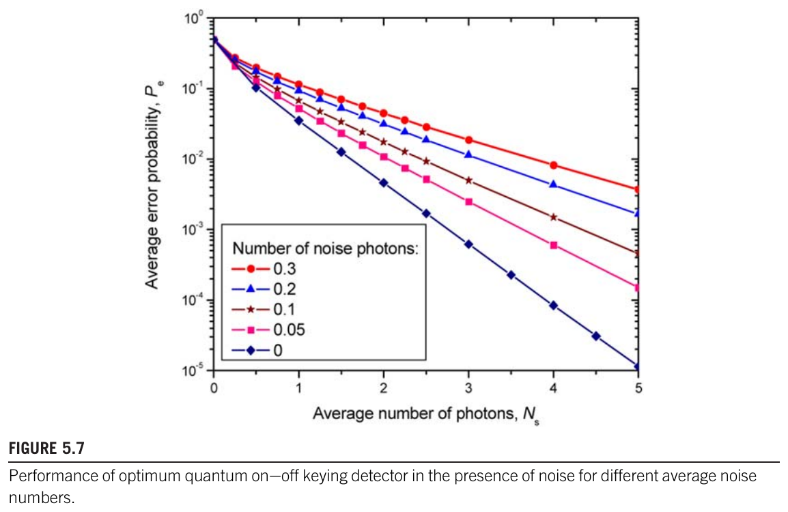
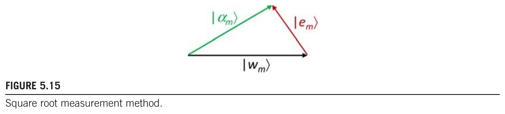

Module 02 · Textbooks: quantum optics and quantum communication
From coherent states to the Helstrom bound, Kennedy and Dolinar, through two textbooks
- Describe coherent states, Poisson statistics and the overlap of two states
- Use the density operator and P-representation for mixed states
- Compute the Helstrom bound, Kennedy and compare five receivers
- Recognise traps with factors, priors, truncation and fading
- Compute the photon and power budget of a link
📚 Source documents of this module (each file checked against its actual content)
| File in the archive | Paper (verified against its content) | Pages | Status | Link | Used in this module |
|---|---|---|---|---|---|
| Fundamentals_of_Quantum_Optics_and_Quantum_Informa.pdf | Fundamentals of Quantum Optics and Quantum Information P. Lambropoulos, D. Petrosyan · 2007 · Springer | 326 | Partly read (long book) | DOI | Read Sec. 1.2.3, 1.2.5, 1.3, 2.2, 2.4 (pp. 26-38, 53-67); Figs. 1.1 and 2.3 quoted. |
| Quantum-Communication,-Quantum-Networks,-and-Quantum-Sensing-by-Ivan-Djordjevic_bibis.ir.pdf | Quantum Communication, Quantum Networks, and Quantum Sensing I. B. Djordjevic · 2022 · Academic Press | 624 | Partly read (long book) | No public link (get the file from the group shared folder) | Read Chapter 5 (Sec. 5.1-5.7, 5.10.1), p. 228, p. 476; Figs. 5.1, 5.3 to 5.7, 5.15 quoted. |
Lecture (slides)
Use the ← → keys or the buttons; ⛶ opens full-screen presentation.
The coherent state as an eigenstate of the annihilation operator
- \(a\)one-photon annihilation operator
- \(|n\rangle\)Fock basis: exactly n photons
- \(\alpha\)complex number, \(|\alpha|^2=\bar n\) is the mean photon number
Example with \(\bar n=0.5\): the coefficient of \(|0\rangle\) is \(e^{-1/4}\), so the probability of 0 photons is \(e^{-0.5}=0.6065\) and of 1 photon \(0.3033\). The coherent state describes an ideal laser pulse.
Poisson photon statistics and Fig. 2.3
- \(\bar n=\sum nP_\alpha(n)\)mean \(|\alpha|^2\)
- \(\Delta\mathcal N\)photon-number deviation
| \(\bar n\) | \(P(0)\) | \(P(1)\) | \(P(2)\) | \(P(\ge3)\) |
|---|---|---|---|---|
| 0.5 | 0.607 | 0.303 | 0.0758 | 0.0144 |
| 3.0 | 0.0498 | 0.149 | 0.224 | 0.577 |
| 6.0 | 0.00248 | 0.0149 | 0.0446 | 0.938 |

Nguồn: Lambropoulos, Petrosyan, Fundamentals of Quantum Optics and Quantum Information, Springer, 2007, Fig. 2.3, tr. 55
Thermal light versus laser light
- \(\bar n\)mean thermal photon number, Eq. (2.45)
- \(\Delta\mathcal N_{\mathrm{coh}}=\sqrt{\bar n}\)compare with the coherent state
| \(\bar n\) | \(P_{\mathrm{Th}}(0)\) | \(\Delta\mathcal N_{\mathrm{coh}}\) | \(\Delta\mathcal N_{\mathrm{Th}}\) |
|---|---|---|---|
| 0.5 | 0.667 | 0.707 | 0.866 |
| 3.0 | 0.25 | 1.73 | 3.46 |
| 6.0 | 0.143 | 2.45 | 6.48 |
The non-zero overlap of two coherent states
- \(|\alpha-\beta|^2\)squared distance in the complex plane
- \(\neq0\)never orthogonal, yet less overlap the farther apart
| \(|\alpha-\beta|\) | \(|\langle\alpha|\beta\rangle|^2\) |
|---|---|
| 0.5 | 0.7788 |
| 1 | 0.3679 |
| 2 | 0.01832 |
| 3 | 1.234×10−4 |
The displacement operator shifts the state
- \(D(\alpha)|0\rangle=|\alpha\rangle\)creates the coherent state from vacuum
- \(D^\dagger(\alpha)=D(-\alpha)\)unitary, the inverse shifts back
Example for the Kennedy receiver: if \(\beta=-\alpha\) then \(D(\alpha)|{-}\alpha\rangle=|0\rangle\); if \(\beta=+\alpha\) then \(D(\alpha)|\alpha\rangle=|2\alpha\rangle\), with \(|2\alpha|^2=4|\alpha|^2\) mean photons.
Quadratures and the phase plane
- \(N_0\)vacuum variance (shot noise)
- \(V(\hat I)V(\hat Q)=N_0^2\)saturates the Heisenberg bound
The state is centred at \(2\alpha=2|\alpha|e^{j\mathrm{Arg}\{\alpha\}}\) (units of \(\sqrt{N_0}\)); every coherent state is the same disc at a different position.

Nguồn: Djordjevic, Quantum Communication, Quantum Networks, and Quantum Sensing, Academic Press, 2022, Fig. 5.3, tr. 170
Coherent and squeezed states in phase space
- \(r\)squeezing parameter
- \(\mathcal Y_{1,2}\)two amplitude operators rotated by \(\phi/2\)
Example \(r=0.5\): \((\Delta\mathcal Y_1)^2=e^{-1}=0.368\) (below vacuum), \((\Delta\mathcal Y_2)^2=e^{1}=2.72\); the product stays 1.

Nguồn: Lambropoulos, Petrosyan, Fundamentals of Quantum Optics and Quantum Information, Springer, 2007, Fig. 1.1, tr. 33
Timeline from Glauber to the 2022 textbook
Years come from the reference list at the end of Djordjevic Chapter 5 (refs [3], [16], [14], [19] to [26]) and the copyright pages of the two textbooks. Dashed: idea influence; solid: direct dependence.
The density operator for pure and mixed states
- \(P_\Psi\ge0,\ \sum P_\Psi=1\)probability of each state, states need not be orthogonal
- \(\rho=\rho^\dagger,\ \mathrm{Tr}\rho=1\)Hermitian, unit trace, non-negative eigenvalues
Example: sending \(|{+}\alpha\rangle\) or \(|{-}\alpha\rangle\) with probability \(\tfrac12\) each, without the receiver knowing which, gives \(\rho=\tfrac12(|\alpha\rangle\langle\alpha|+|{-}\alpha\rangle\langle{-}\alpha|)\), a mixed state.
Populations, coherences and the purity test
- \(\rho_{nn}\)populations: probability in \(|n\rangle\)
- \(\rho_{mn}\ (m\ne n)\)coherences: depend on relative phase
| State | \(\mathrm{Tr}\rho^2\) | Type |
|---|---|---|
| \(|\alpha\rangle\langle\alpha|\) | 1 | pure |
| \(\tfrac12(|\alpha\rangle\langle\alpha|+|{-}\alpha\rangle\langle{-}\alpha|),\ \bar n=1\) | 0.5092 | mixed |
| \(\tfrac1d I_d,\ d=4\) | 0.25 | completely mixed |
Formula for the BPSK mixture: \(\mathrm{Tr}\rho^2=\tfrac12(1+e^{-4\bar n})=\tfrac12(1+e^{-4})=0.5092\).
Expectation values and measurement probabilities via the trace
- \(A\)Hermitian observable
- \(|x_k\rangle\)eigenvector of \(A\), for outcome \(x_k\)
Example: \(\rho=\mathrm{diag}(0.9,\,0.1)\) and \(A=\sigma_z=\mathrm{diag}(1,-1)\) give \(\langle A\rangle=0.9-0.1=0.8\); \(\Pr(x=+1)=0.9\).
The P-representation: a mixture of coherent states
- \(P(\alpha)\)weight like a probability density but possibly negative or singular
- \(P=\delta^{(2)}(\alpha-\beta)\)for the coherent state \(|\beta\rangle\)
- \(N\)mean thermal photon number
- \(\mu\)coherent amplitude of the signal
The quantum detection problem with M hypotheses
- \(\zeta_j\)prior probability of hypothesis \(H_j\)
- \(P_j\)projection operator deciding \(H_j\)
- \(\succeq0\)positive semidefinite, for every \(j\)
The two-hypothesis solution via eigenvalues
- \(U(\eta)\)step function: 1 if \(\eta\ge0\), 0 if \(\eta\lt0\)
- \(P_1=\sum_kU(\eta_k)|\eta_k\rangle\langle\eta_k|\)optimal measurement, Eq. (5.32)
Example: \(\rho_0=\mathrm{diag}(0.9,0.1)\), \(\rho_1=\mathrm{diag}(0.2,0.8)\), \(\zeta_0=\tfrac12\). The eigenvalues of \(\rho_1-\rho_0\) are \(\{-0.7,+0.7\}\); only \(+0.7\) counts: \(P_e=\tfrac12(1-0.7)=0.15\).
The Helstrom bound for two pure states
- \(\zeta_0=\zeta_1=\tfrac12\)reduces to \(\tfrac12[1-\sqrt{1-|\langle\psi_1|\psi_0\rangle|^2}]\)
- \(\cos\theta=\langle\psi_0|\psi_1\rangle\)angle between the two vectors, Fig. 5.1
The optimal angle \(\phi_1^*=(\pi/2-\theta)/2\) gives \(P(C)=\tfrac12[1+\sin\theta]\) (Eq. 5.44).

Nguồn: Djordjevic, Quantum Communication, Quantum Networks, and Quantum Sensing, Academic Press, 2022, Fig. 5.1, tr. 164
OOK and BPSK under the Helstrom bound
- \(N_s\)mean photons per symbol: OOK \(|\alpha|^2/2\), BPSK \(|\alpha|^2\)
- \(|\langle0|\alpha\rangle|^2=e^{-|\alpha|^2}\)OOK overlap, Eq. (5.95a)
- \(|\langle{-}\alpha|\alpha\rangle|^2=e^{-4|\alpha|^2}\)BPSK overlap
With \(N_s=1\): OOK \(0.03506\), BPSK \(0.0046\). For the same photon budget BPSK has about 7.62 times lower error.
The Kennedy receiver: displacement then photon counting
- \(D(\alpha)\)local-oscillator laser of the same amplitude, mixed on a beam combiner
- \(N_s=|\alpha|^2\)for BPSK
Rule: a click means \(|\alpha\rangle\), no click means \(|{-}\alpha\rangle\). An error occurs only when \(|2\alpha\rangle\) yields no photon, with probability \(e^{-4|\alpha|^2}\).

Nguồn: Djordjevic, Quantum Communication, Quantum Networks, and Quantum Sensing, Academic Press, 2022, Fig. 5.4, tr. 174
The Dolinar receiver: photon-by-photon feedback
- \(\lambda_\mp\)photon arrival rates (non-homogeneous Poisson process)
- \(s_0(t)\)local-oscillator amplitude adjusted over time
At \(t=T=1\): \(P_c\) equals the Helstrom bound exactly. For \(\alpha=1\), \(\zeta_0=0.8\): \(P_e(T)=0.002939\) equals Helstrom \(0.002939\).

Nguồn: Djordjevic, Quantum Communication, Quantum Networks, and Quantum Sensing, Academic Press, 2022, Fig. 5.5, tr. 175
The five receivers of Fig. 5.6
- \(\mathrm{erfc}\)complementary error function
- \(N_s\)photons per symbol

Nguồn: Djordjevic, Quantum Communication, Quantum Networks, and Quantum Sensing, Academic Press, 2022, Fig. 5.6, tr. 177
Error probabilities recomputed for the five schemes
| \(N_s\) | Photon counting OOK | Optimum OOK | Coherent BPSK | Kennedy | Helstrom BPSK |
|---|---|---|---|---|---|
| 0.5 | 0.184 | 0.102 | 0.0786 | 0.0677 | 0.0351 |
| 1 | 0.0677 | 0.0351 | 0.0228 | 0.00916 | 0.0046 |
| 2 | 0.00916 | 0.0046 | 0.00234 | 1.68×10−4 | 8.39×10−5 |
| 3 | 0.00124 | 6.20×10−4 | 2.66×10−4 | 3.07×10−6 | 1.54×10−6 |
| 5 | 2.27×10−5 | 1.14×10−5 | 3.87×10−6 | 1.03×10−9 | 5.15×10−10 |
Reading: at \(N_s=5\) Kennedy gives \(1.03\times10^{-9}\) and Helstrom \(5.15\times10^{-10}\), matching the two lowest curves of Fig. 5.6 (order \(10^{-9}\)). Computed with \(P_e=\tfrac12e^{-4N_s}\) and \(\tfrac12[1-\sqrt{1-e^{-4N_s}}]\).
Photon budget for a target error probability
- \(P_e\approx\tfrac14e^{-4N_s}\)Helstrom when \(e^{-4N_s}\ll1\)
- \(P_e=\tfrac12e^{-4N_s}\)Kennedy (exact)
| \(P_e\) | Photon counting OOK | Optimum OOK | Coherent BPSK | Kennedy | Helstrom BPSK |
|---|---|---|---|---|---|
| 0.001 | 3.11 | 2.76 | 2.39 | 1.55 | 1.38 |
| 1e-06 | 6.56 | 6.21 | 5.65 | 3.28 | 3.11 |
| 1e-09 | 10 | 9.67 | 8.99 | 5.01 | 4.83 |
Check at \(P_e=10^{-6}\): \(\tfrac14\ln(250000)=3.107\), matching 3.107 from the numerical root. Entries are mean photons per symbol needed for \(P_e\).
Kennedy is close to Helstrom, homodyne is far
- \(\mathrm{hom}\)coherent BPSK \(\tfrac12\mathrm{erfc}\sqrt{2N_s}\)
| \(N_s\) | Kennedy/Helstrom | hom/Helstrom |
|---|---|---|
| 0.5 | 1.93 | - |
| 1 | 1.991 | 4.946 |
| 2 | 2 | 27.89 |
| 5 | 2 | - |
Kennedy gives 3.07×10−6, Helstrom 1.54×10−6 (ratio 2), while coherent BPSK gives 2.66×10−4, about 173 times Helstrom. The book remarks that Kennedy only slightly trails Helstrom.
Checking the closed forms in the Fock basis
- \(\rho_j\)\(d\times d\) matrices from the Fock expansion, \(d=40\)
| Case | Eigenvalues (Fock) | Closed form | Relative difference |
|---|---|---|---|
| BPSK, \(N_s=1\) | 0.0046000704 | 0.0046000704 | 3.8×10−14 |
| OOK, \(N_s=1\) | 0.035063252 | 0.035063252 | 2.8×10−15 |
| Kennedy, \(N_s=1\) | 0.0091578194 | 0.0091578194 | 0 |
Kennedy is checked by \(\tfrac12\Pr(n=0\,|\,2\alpha)=\tfrac12e^{-4}\) (Poisson). The trace of \(\rho_0\) after truncation at \(d=40\) is 1.
Thermal noise degrades the optimum OOK receiver
- \(N\)mean noise photon number
- \(\eta_k\)eigenvalues of \(\rho_1-\rho_0\)
| \(N\) | \(P_e\) (\(N_s=5\)) |
|---|---|
| 0.0 | 1.14×10−5 |
| 0.05 | 1.51×10−4 |
| 0.1 | 4.59×10−4 |
| 0.2 | 0.00167 |
| 0.3 | 0.00369 |
Recomputed with \(\rho_1=D(\alpha)\rho_0D^\dagger(\alpha)\), \(d=120\). Results match the curves of Fig. 5.7 at \(N_s=5\).

Nguồn: Djordjevic, Quantum Communication, Quantum Networks, and Quantum Sensing, Academic Press, 2022, Fig. 5.7, tr. 182
Multiple copies and the limit of Dolinar
- \(N\)number of copies of the same state
| \(N\) | \(P_e\) with \(|\alpha|^2=0.5\) |
|---|---|
| 1 | 0.03506 |
| 2 | 0.0046 |
| 3 | 6.201×10−4 |
| 4 | 8.387×10−5 |
Each extra copy multiplies the overlap by itself, i.e. multiplies \(N_s\) by \(N\). With \(|\alpha|^2=0.5\): \(N=2\) gives exactly the value of one copy with \(|\alpha|^2=1\), 0.0046.
The amplitude schedule of the Dolinar receiver
- \(4\zeta_0\zeta_1=0{,}64\)asymmetry of the priors
| \(t/T\) | \(s_0(t)/\alpha\) | \(P_c(t)\) |
|---|---|---|
| 0.0 | 1.667 | 0.8 |
| 0.25 | 1.144 | 0.9372 |
| 0.5 | 1.046 | 0.9779 |
| 1.0 | 1.006 | 0.9971 |
At \(t=0\), \(P_c=\zeta_0=0.8\): the receiver just guesses from the prior. At the end, \(P_c(T)=0.9971=1-0.002939\), exactly Helstrom.
The trap of confusing \(N_s\) with \(|\alpha|^2\)
- \(N_s\)average over the two equiprobable symbols
| \(|\alpha|^2=2\) and formula | \(N_s\) used | \(P_e\) |
|---|---|---|
| OOK correct | 1 | 0.03506 |
| OOK wrong: \(N_s=|\alpha|^2\) | 2 | 0.0046 |
| BPSK correct | 2 | 8.387×10−5 |
| BPSK wrong: \(N_s=|\alpha|^2/2\) | 1 | 0.0046 |
Unequal priors in the Helstrom bound
- \(\min(\zeta_0,\zeta_1)\)error if the signal is ignored and the likelier symbol is always guessed
| \(\zeta_0\) | \(P_e^*\) (\(N_s=0{,}5\)) | \(\min(\zeta_0,\zeta_1)\) |
|---|---|---|
| 0.5 | 0.03506 | 0.5 |
| 0.7 | 0.02928 | 0.3 |
| 0.9 | 0.01233 | 0.1 |
With \(\zeta_0=0.9\): \(4\zeta_0\zeta_1=0.36\), \(P_e^*=0.01233\), about 8.11 times below the prior-only guess \(0.1\).
The Gram matrix and the square root measurement
- \(\Gamma=[|\alpha_1\rangle,\dots,|\alpha_M\rangle]\)state matrix
- \(G_{jk}=\langle\alpha_j|\alpha_k\rangle\)Gram matrix of overlaps
Idea: pick measurement states \(|w_m\rangle\) as close as possible to the signal states \(|\alpha_m\rangle\) while keeping \(WW^\dagger=\mathbb 1\) (Eq. 5.264, 5.265).

Nguồn: Djordjevic, Quantum Communication, Quantum Networks, and Quantum Sensing, Academic Press, 2022, Fig. 5.15, tr. 206
SRM for coherent PSK constellations: concrete numbers
- \(\mathrm{Tr}\,G=M\)unit diagonal
| \(M\) | Eigenvalues of \(G\) | \(P_e\) (SRM) |
|---|---|---|
| 2 | 0.865, 1.14 | 0.0046 |
| 3 | 0.561, 1.15, 1.29 | 0.02864 |
| 4 | 0.246, 0.738, 1.48, 1.53 | 0.09242 |
For \(M=2\) SRM gives \(0.00460007\), exactly Helstrom BPSK \(0.00460007\) at \(|\alpha|^2=1\). Raising \(M\) to 3 and 4 increases the error because the points sit closer.
The limit of Gaussian reception: homodyne versus Helstrom
- \(\mathrm{erfc}(x)=\tfrac{2}{\sqrt\pi}\int_x^\infty e^{-t^2}dt\)complementary error function
| \(N_s\) | \(P_{e,\mathrm{hom}}\) | \(P_{e,\mathrm{Hel}}\) | Ratio |
|---|---|---|---|
| 1 | 0.0228 | 0.0046 | 4.95 |
| 2 | 0.00234 | 8.39×10−5 | 27.9 |
| 3 | 2.66×10−4 | 1.54×10−6 | 173 |
Since \(\mathrm{erfc}(x)\approx e^{-x^2}/(x\sqrt\pi)\), \(P_{e,\mathrm{hom}}\approx e^{-2N_s}/(2\sqrt{2\pi N_s})\) decays like \(e^{-2N_s}\), half the exponent of Helstrom \(e^{-4N_s}\).
Fock truncation and the lost trace
- \(\epsilon_d\)trace lost by the cut
- \(\rho/\mathrm{Tr}\rho\)renormalise to unit trace
| \(\bar n\) | \(d\) | \(\epsilon_d\) |
|---|---|---|
| 2 | 16 | 4.80×10−10 |
| 5 | 16 | 6.90×10−5 |
| 10 | 16 | 0.0487 |
| 15 | 16 | 0.432 |
Fading turns the received state into a mixture
- \(\mathbb E_I\)average over the irradiance law (Gamma-Gamma in module 03)
| Quantity | \(P_e\) |
|---|---|
| fixed irradiance \(I=1\) | 0.0046 |
| \(I=0{,}5\) | 0.03506 |
| \(I=1{,}5\) | 6.201×10−4 |
| average \(\mathbb E[P_e(I)]\) | 0.01784 |
| Helstrom of the mixture | 0.01934 |
What the two textbooks do not cover
- \(f_I\)Gamma-Gamma density of the irradiance
- \(\alpha,\beta\)large-scale and small-scale parameters
| Topic | In the books |
|---|---|
| Coherent states, Helstrom, Kennedy, Dolinar, SRM | Yes, Lambropoulos Ch. 1-2; Djordjevic Ch. 5 |
| Gaussian thermal noise | Yes, Djordjevic Sec. 5.7, via Fock matrices |
| Geometric and scattering FSO loss | Yes, Djordjevic p. 228 (the \(T\) formula) |
| Gamma-Gamma fading law | Only a brief mention in the quantum radar context (p. 476), no Helstrom analysis |
The step from Gamma-Gamma to Helstrom is treated in the base paper of module 03.
Link budget: from photons to power
- \(T_s\)symbol duration
- \(N_s\)photons per symbol for \(P_e=10^{-6}\)
| Receiver | \(N_s\) | \(P_{\min}\) (W) |
|---|---|---|
| Photon counting OOK | 6.56 | 8.41×10−10 |
| Coherent BPSK | 5.65 | 7.24×10−10 |
| Kennedy | 3.28 | 4.20×10−10 |
| Helstrom BPSK | 3.11 | 3.98×10−10 |
(Illustration) \(\lambda=1550\) nm: \(E_\gamma=1.282\times10^{-19}\) J, \(T_s=1\) ns, losses ignored.
Geometric FSO loss enters \(N_s\)
- \(d_{Tx},d_{Rx}\)transmit and receive aperture diameters
- \(D\)beam divergence
- \(a\)scattering coefficient, below 0.1 dB/km in clear sky
(Assumption) \(d_{Tx}=d_{Rx}=0.1\) m, \(D=10^{-4}\) rad, \(L=1000\) m, scattering ignored: \(T=[0.1/(0.1+0.1)]^2=0.25\). To receive \(N_s=3.1\) one must send \(N_s^{tx}=3.1/0.25=12.4\).
A surrogate replacing the SDP in the Helstrom problem
- \(d\)Fock truncation size
| \(d\) | operations \(\sim d^3\) |
|---|---|
| 16 | 4096 |
| 32 | 3.277e+04 |
| 64 | 2.621×105 |
| 128 | 2.097×106 |
Fock check: the closed form and eigenvalues agree to \(10^{-12}\) relative at \(d=40\), so Helstrom labels can be checked by the closed form for pure states. For fading mixtures (module 03) no closed form exists; this is where a surrogate helps.
Choosing a receiver by engineering constraints
| Receiver | \(P_e\) at \(N_s=3\) | Hardware requirement | Source |
|---|---|---|---|
| Coherent BPSK (homodyne) | 2.66×10−4 | Local laser, classical circuit | Djordjevic tr. 176 |
| Kennedy | 3.07×10−6 | Displacement + one photon counter | Djordjevic tr. 174 |
| Dolinar | 1.54×10−6 | Precise opto-electronic feedback, multiple copies | Djordjevic tr. 175-176 |
| Helstrom | 1.54×10−6 | Theoretical bound, any measurement | Eq. (5.98) |
- \(\le2P_{e,\mathrm{Hel}}\)asymptotic ratio equal to 2
Summary: from the coherent state to Helstrom
- \(N_s=|\alpha|^2\)for BPSK
- \(\tfrac12e^{-4N_s}\)twice Helstrom for large \(N_s\)
- Optimal two-state detection depends only on \(|\langle\psi_1|\psi_0\rangle|^2\) and the priors.
- Kennedy uses displacement and photon counting, error \(\tfrac12e^{-4N_s}\).
- Fading, thermal noise and Fock truncation make the state a mixture; diagonalisation is then needed.
- The books have no Gamma-Gamma analysis for Helstrom; see module 03.
Detailed notes
Theory and historical background
Glauber (1963) and Sudarshan (1963) laid the ground for coherent states and the P-representation. Helstrom, Liu and Gordon (1970) built quantum communication theory; Kennedy (1973) and Dolinar (1973) proposed two receivers for coherent BPSK; Cook, Martin and Geremia (2007) ran a closed-loop experiment. The two textbooks gather these ideas: Lambropoulos and Petrosyan cover quantum optics, Djordjevic (Ch. 5) covers detection.
Plain words, technique, table, calculation
Plain words: two opposite-phase laser pulses still look slightly alike, so the receiver always has some error. Technique: \(P_e=\tfrac12[1-\sqrt{1-|\langle\psi_1|\psi_0\rangle|^2}]\). Table: the slide "Error probabilities recomputed for the five schemes". Calculation: the examples below.
\(e^{-4\cdot2}=3.355\times10^{-4}\); \(\sqrt{1-e^{-8}}=0.999832\); \(P_e=\tfrac12(1-\cdot)=8.387\times10^{-5}\).
\(|\alpha|^2=0.2\) when on so \(N_s=0.1\): \(e^{-0.2}=0.8187\), \(P_e=\tfrac12(1-\sqrt{1-e^{-0.2}})=0.2871\), near the coin-flip 0.5, so many pulses are needed.
To get \(P_e=10^{-6}\) with Kennedy needs \(N_s=3.281\); with \(T=0.01\) one must send \(N_s^{tx}=328.1\) photons per symbol.
A sensor reports "1" only 10% of the time: \(\zeta_0=0.9\), \(N_s=0.5\): \(P_e^*=0.01233\) versus always guessing "0" at 0.1.
At \(d=40\), \(N_s=1\): eigenvalues 0.00460007037 and closed form 0.00460007037; relative difference 3.8×10−14. A larger gap means a problem in the labels or the Fock cut.
Same \(\bar n=6\): laser has \(\Delta N=\sqrt6=2.45\), thermal light \(\sqrt{36+6}=6.48\) (Eq. 2.37 and 2.47).
No noise: 1.14×10−5 (lowest curve, order \(10^{-5}\)); \(N=0.3\): 0.00369 (top curve, order \(4\cdot10^{-3}\)). The recomputation matches the figure.
Pitfalls in exercises
- Confusing \(N_s\) with \(|\alpha|^2\) for OOK (factor 2).
- Forgetting \(4\zeta_0\zeta_1\) for unequal priors.
- Using \(\langle\Psi|A|\Psi\rangle\) for a mixed state instead of \(\mathrm{Tr}(\rho A)\).
- Summing all \(\eta_k\) instead of those with \(\eta_k\ge0\) in Eq. (5.33).
- Forgetting to renormalise the trace after a Fock cut.
Reading scope
- Lambropoulos and Petrosyan (326 pages): read Sec. 1.2.3, 1.2.5, 1.3 (pp. 26-38) and Sec. 2.2, 2.4 (pp. 53-67). Atom, cavity QED and quantum circuit chapters (Part II) were not read.
- Djordjevic (624 pages): read Chapter 5 Sec. 5.1 to 5.7 and 5.10.1 (pp. 158-183, 203-208), the FSO loss passage in Sec. 6.4 (p. 228); Chapter 11 mentions Gamma-Gamma only (p. 476).
- Page numbers are the printed book pages, not PDF pages.
Quick self-check
Deep practice
Open the bank of 45 multiple-choice questions and 5 code-writing tasks →
References
- P. Lambropoulos, D. Petrosyan, Fundamentals of Quantum Optics and Quantum Information, Springer, 2007.
- I. B. Djordjevic, Quantum Communication, Quantum Networks, and Quantum Sensing, Academic Press, 2022.
- C. W. Helstrom, Quantum Detection and Estimation Theory, Academic Press, 1976.
- R. S. Kennedy, MIT RLE QPR 108, 219-225, 1973.
- S. J. Dolinar, MIT RLE QPR 111, 115-120, 1973.
- R. J. Glauber, Phys. Rev. 131, 2766, 1963.